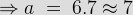
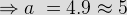
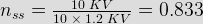
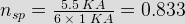
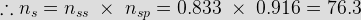
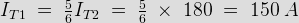
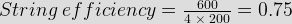
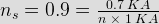
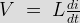

- During gate recovery time
Charges at J2 junction are trapped. So recombination is the only way to remove them.
- Typical range of thyristor turn OFF time is
Generally thyristor takes very short time to turn OFF in range 3 – 100 μs.
- Which statement is true ?
tq = trr + tgr
Where trr > tgr so, tq > trr tc > tq for reliable turn OFF. - ON state voltage drop across SCR lie between the range
ON state voltage drop is very low around 1 – 1.5 V.
- SCRs are used in series to meet
In a series connection voltage division takes place but current remain same through over the line.
- String efficiency depends upon

- To meet high current demand we use SCRs in
Current division takes place in case of parallel connection but in anti parallel connection desired current division does not take place as SCR’s.
- By which one of the following we can measure the reliability of a string?
Derating factor (DRF) is used to measure the reliability of a string which given by DRF = 1 – string efficiency.
- Calculate the maximum voltage that can be safely blocked by the string shown in figure, if maximum allowable leakage current is 2 mA?
In series connection same leakage current flows through all SCRs. Now SCR’s have difference in their I-V characteristics. So unequal volume division will take place. Here volume across T1 and T2 is 5 KV and 3 KV respectively. So, maximum 5 + 3 = 8 KV can be safely applied.
- A thyristor string is made of a no. of SCR connected in series and parallel. The string have volume and current of 11 KV and 4 KA. The voltage and current rating of available SCRs are 1800 V and 1000 A. For a string efficiency of 90 % let the number of SCRs in series and parallel are a and b respectively. Then the value of a and b will be



. - 60 thyrsistors are connected in series and parallel to form a 10 KV and 5.5 KA switch. Each thyristor is rated for 1.2 KV, 1 KA. The no. of parallel path are 6. The efficiency of the switch is


 - Figure shows two thyristors rated 400 A sharing a load current. Current through T2 is 180A. Current through T1 will be
Vab=IT1 × 0.06 = IT2 × 0.05
 - A 200 A thyristor is to be operated in parallel with a 300 A thyristor. The ON state voltage drops are 1.5 V and 1.2 Volts. What is the value of resistance R to be connected in series with each thyristor, so that current through the combination is 500 A and each of them is fully loaded ?
1.5 + 200 R = 1.2 + 300 R
⇒ R = 3 × 10–3 Ω. - Dynamic equalizing circuit is used for
Dynamic equalizing circuit is nothing but snubber circuit which is used to equalize the voltage division under transient condition.
- 4 thyristors rated 200 V in series. The operating voltage of the string is 0.600 V. Derating factor of the string is

DRF = 1 – 0.75 = 0.25. - A string of n parallel SCRs is operated at 72 KA, the rating of each SCR is 1 KA. If derating factor of the string is 0.1. Then calculate the value of n
0.1 = 1 – ns

n = 80. - Maximum di / dt in a SCR is



- For series connected SCR’s dynamic equalising circuit consists of
Dynamic equalising circuit is snubber circuit.
- Anode current in an SCR consists of
As it is a bipolar device.
- Dynamic equalising circuit is useful
Dynamic equalising circuit is nothing but snubber circuit.
Design with  by SARU TECH
by SARU TECH
www.sarutech.com
Content Credited to electrical4u.com
Online Electrical Engineering Study Site